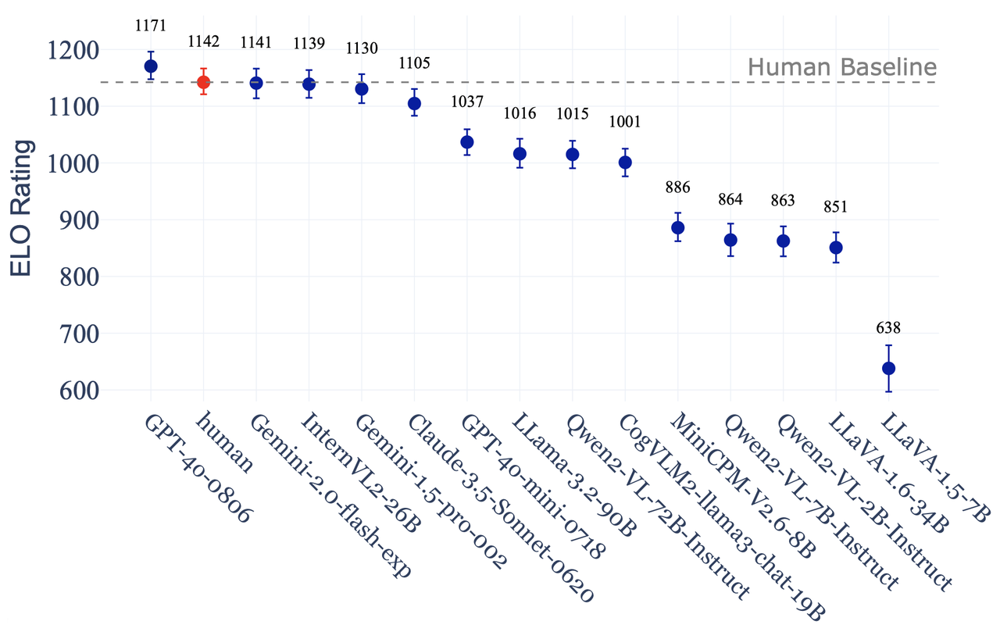
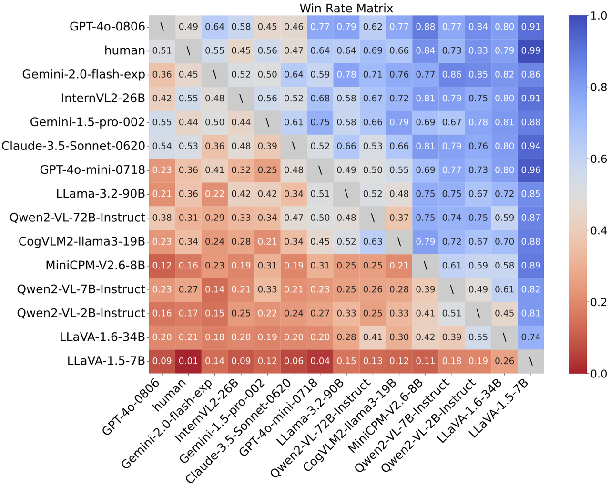
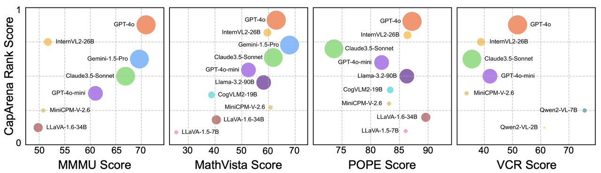
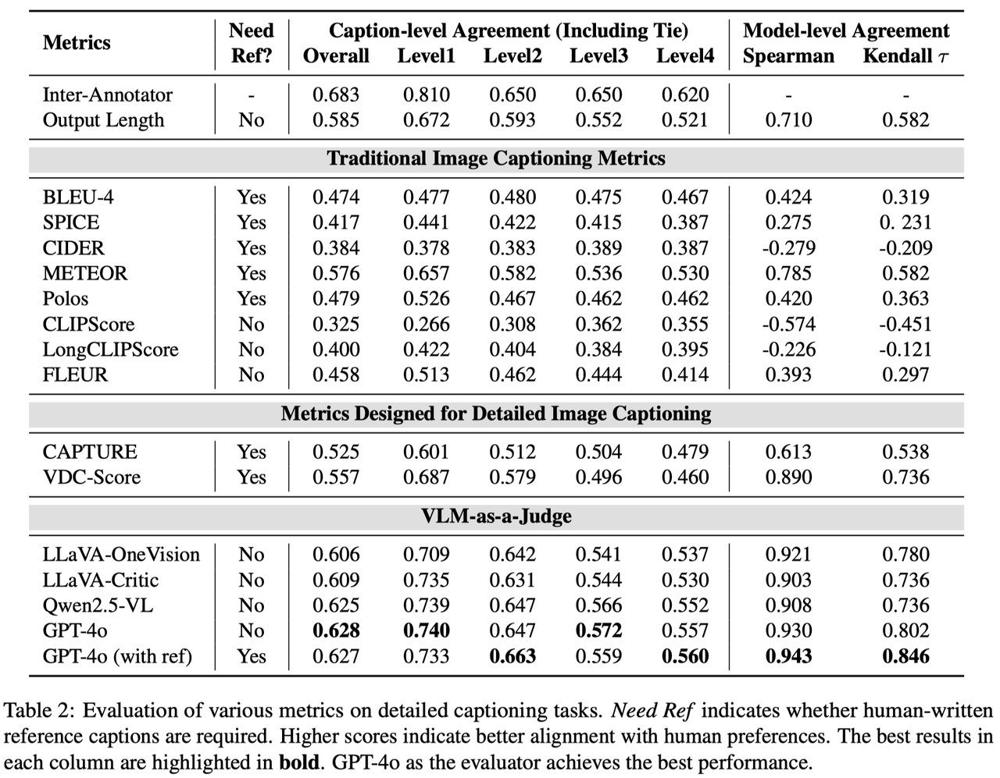
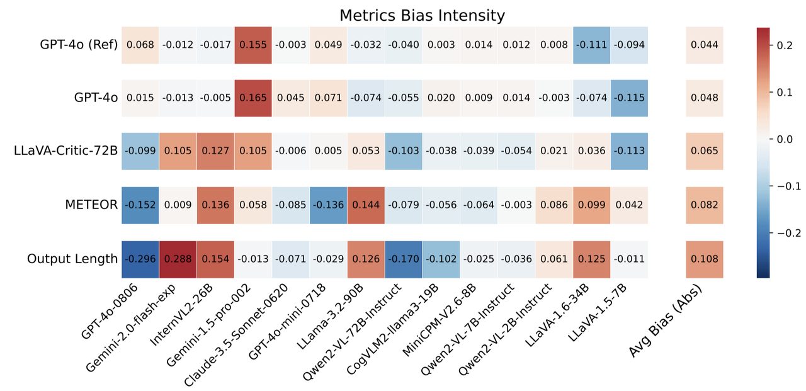
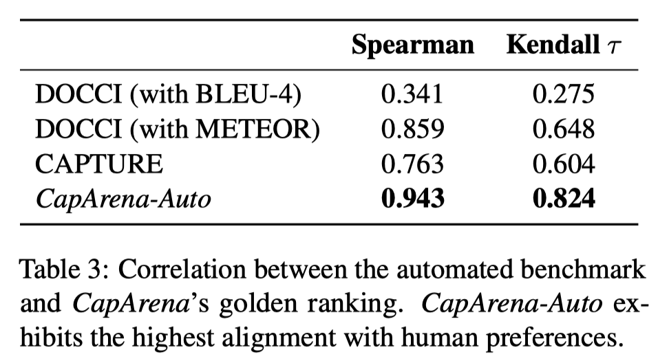

Image captioning has been a longstanding challenge in vision-language research. With the rise of LLMs, modern Vision-Language Models (VLMs) generate detailed and comprehensive image descriptions. However, benchmarking the quality of such captions remains unresolved. This paper addresses two key questions:(1) How well do VLMs actually perform on image captioning, particularly compared to humans? We built CapArena, a platform with over 6000 pairwise caption battles and high-quality human preference votes. Our Arena-style evaluation marks a milestone, showing that leading models like GPT-4o achieve or even surpass human performance, while most open-source models lag behind. (2) Can automated metrics reliably assess caption quality? Using human annotations from CapArena, we evaluate traditional and recent captioning metrics, as well as VLM-as-a-Judge. Our analysis reveals that while some metrics (e.g., METEOR) show decent caption-level agreement with humans, their systematic biases lead to inconsistencies in model ranking. In contrast, VLM-as-a-Judge demonstrates robust discernment at both the caption and model levels. Building on these insights, we release CapArena-Auto, an accurate and efficient automated benchmark for detailed captioning, achieving 94.3% correlation with human rankings at just $4 per test.
How well do current VLMs actually perform on image captioning?
We built CapArena, the first large-scale human-centered empirical study to benchmark advanced VLMs performance, which contained over 6000 pairwise caption battles and high-quality human preference votes. Our arena-style evaluation marks a milestone, showing that leading models like GPT-4o achieve or even surpass human performance, while most open-source models still lag behind.


CapArena uncovers disparities in fine-grained visual perception across models. As shown in the correlation between vision-language benchmark scores and CapArena ranking, strong performance on general benchmarks does not always translate to superior captioning ability.

Can automated metrics reliably assess detailed caption quality?
Using human annotations from CapArena, we evaluate traditional captioning metrics (e.g., BLEU, CIDER, METEOR) and recent proposed captioning metrics, as well as the ability of VLM-as-a-Judge to assess detailed caption quality.

Our results reveal that most metrics designed for short captions, such as CLIPScore, fail entirely in the detailed captioning task. Although some rule-based metrics, such as METEOR, exhibit decent agreement with human judgments at the caption level, they suffer from systematic biases across different VLMs. This results in low agreement at the model level, where the rankings produced by these metrics deviate significantly from human rankings. In contrast, we introduce VLM-as-a-Judge with reference captions, which demonstrates robust discernment for detailed captions. It achieves the highest alignment with human judgments at both the caption and model levels.

Systematic biases—overestimating or underestimating certain models are a critical concern. METEOR and Output Length (which simply favors longer captions) exhibit decent caption-level agreement, but their model-level agreement is notably lower. As displayed above, all metrics exhibit systematic biases. The degree of bias varies across metrics; Output Length shows a particularly strong bias, while GPT-4o-as-a-Judge has a lower bias than METEOR (average 4.4% vs. 8.2%). This suggests that the disagreement between GPT-4o-as-a-Judge and humans is more likely due to random preferences per independent sample, rather than harmful bias towards specific models, leading to more accurate model ranking estimates.
CapArena-Auto: An Automated Benchmark for Detailed Captioning
In light of the above findings, we release CapArena-Auto, an automated benchmark for detailed captioning. It comprises 600 samples and innovatively adopts the pairwise battle paradigm to improve evaluation reliability. VLM-as-a-Judge is employed to estimate human preferences by comparing captions against three baseline models. With 94.3% correlation to human rankings and just $4 per test, CapArena-Auto offers a fast and robust pipeline for evaluating detailed captioning.

BibTeX
@article{cheng2025caparena,
title={CapArena: Benchmarking and Analyzing Detailed Image Captioning in the LLM Era},
author={Cheng, Kanzhi and Song, Wenpo and Fan, Jiaxin and Ma, Zheng and Sun, Qiushi and Xu, Fangzhi and Yan, Chenyang and Chen, Nuo and Zhang, Jianbing and Chen, Jiajun},
journal={arXiv preprint arXiv:2503.12329},
year={2025}
}